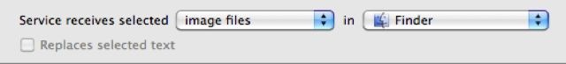
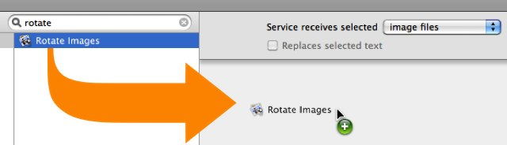
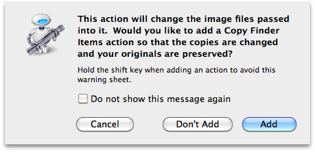
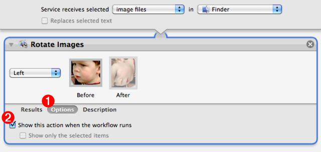
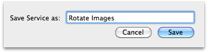
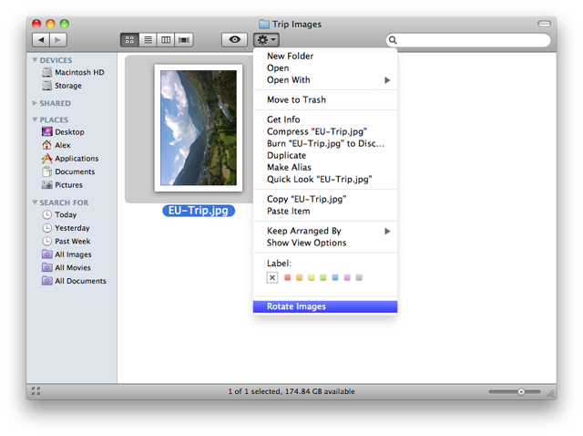
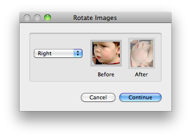
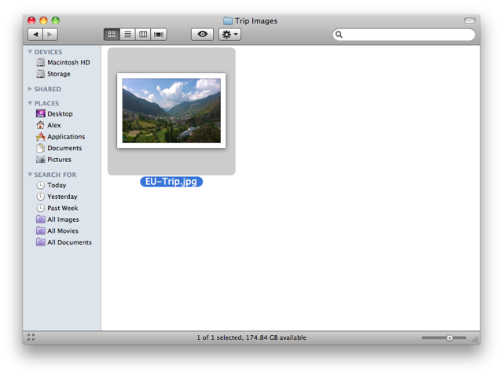

Create an Image Rotation Service
REQUIRES MAC OS X v10.6
Here's an easy-to-create service that will change the orientation of image files selected in the Finder.
STEP 1 • Open a New Services Workflow
New services are created using the Automator application located in the Applications folder on your computer. Double-click the icon of Otto the automation robot to open Automator. Select the Services template from the template chooser sheet in the forthcoming workflow window.

Click the OK button in the sheet, and a service workflow will be opened.
STEP 2 • Set the Input Settings
A gray bar will be displayed across the top of the workflow area of the Automator window. This bar displays the settings that indicate (1) the type of data to be processed by the workflow, (2) the application in which the service will be available, and (3) whether or not to replace any selected text with the result of the service workflow.

For this example, the workflow will process image files selected in the Finder, so choose Images Files as the input type from the first popup menu, and Finder from the second popup menu. Since the input type is not text-based, the checkbox will automatically be disabled.

STEP 3 • Add an Action
Now that the input settings have been applied, locate the appropriate Automator action for rotating image files, by entering the keyword “rotate” in the search field to the left of the data input bar. The Rotate Images will be displayed in the action list below the search field. Drag the action title to the area after the data settings bar, and release the mouse to add the action.

Once the mouse is released, the following warning dialog will drop down. Since this service will permanently change the image files it processes, this dialog is offering the option to insert another action into the workflow which will copy the orginal files and perform the processing on their duplicates. For the purposes of this tutorial, this is not necessary so click the Don't Add button to finish adding the Rotate Images action to the workflow.

The logic of this sservice will be to display a panel of rotation options to the user, allowing them to choose which direction in which to rotate the selected images. To accomplish this, Rotate Images action view will need to be displayed each time the wervice is run. This ability can be set in the action's parameters. Click the Options button at the bottom of the action view (1), and then check the Show this action when the workflow runs checkbox (2). The action view will now appear each time the service workflow is executed.

STEP 4 • Save the Service
Choose Save from Automator's File menu and in the drop-down naming sheet, enter the name for this service: Launch (name of your chosen application)

The service is automatically installed into the Services framework for the current user. You may now close the automator window and quit Automator.
STEP 5 • Using the Service
Select one or more image files in the Finder, and click the Action Menu in the Finder window toolbar. The newly created service will now appear on the displayed menu:

Select Rotate Images from the action menu, and the action view from the service workflow will be displayed in a floating window:

Select the appropriate rotation option from the popup menu in the dialog and click the Continue button to apply the chosen rotation value to the selected image files:

Summary
Congratulations! You've created a contexual service for the Finder, that rotates images. Oh you Power-User you ;-)